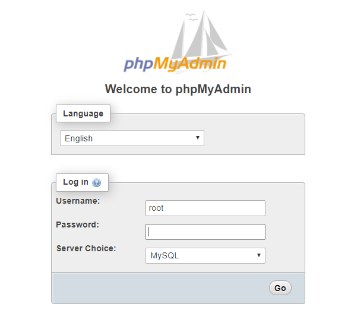
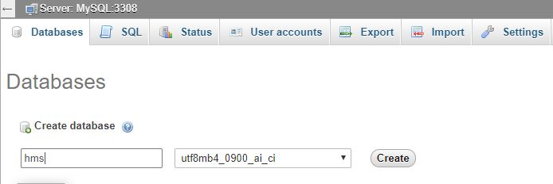
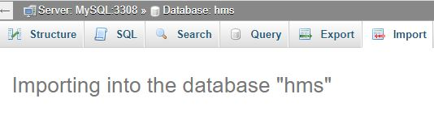
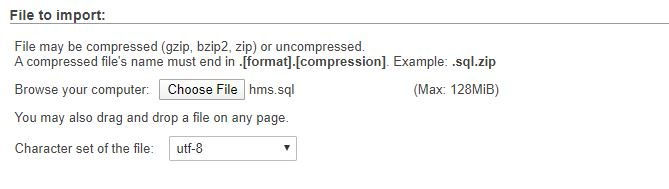
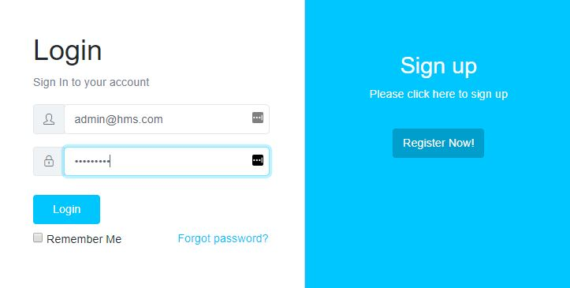
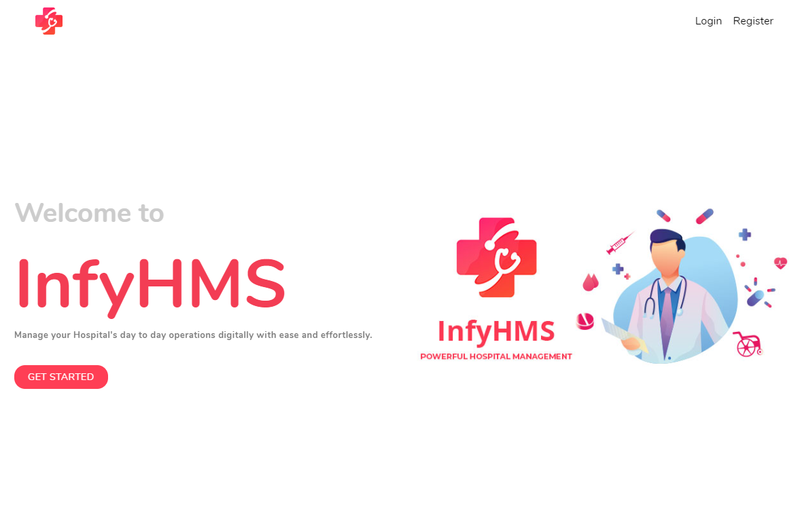
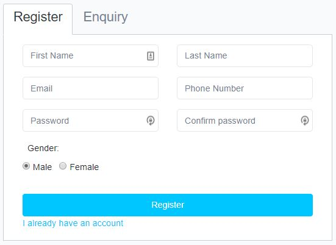
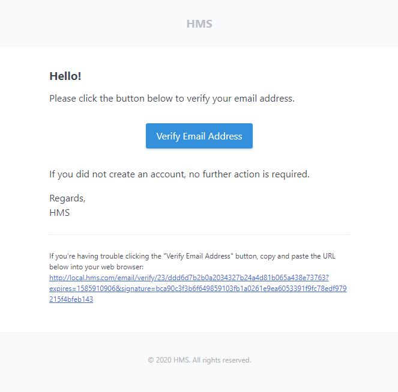

# Guide
The goal of HMS is to give an easy way for managing hospital activities at an affordable price.
# Technologies Used
This system uses multiple technologies to give the best possible experience.
- PHP with Laravel Framework
- MySQL 5.6+
- PHP 7.2+
- jQuery
- Ajax
# Installation Guide
We tried our best to make the installation of the system as easy as possible. System Requirements It is assumed that you have primary knowledge Laravel installation knowledge since this application is built on Laravel.
# System Requirement
It is assumed that you have primary knowledge Laravel and JS application installation knowledge since this application is built on Laravel with JS.
You can read about laravel Requirements here
You need update below variables in php.ini file if you want to send bigger files (Optional).
upload_max_filesize = 50M
max_file_uploads = 50
post_max_size = 100M
# Setup InfyHMS System
If you have purchased the InfyHMS system then you will be able to find the zip named dist.zip
If you want to setup InfyHMS into your local environment then you can take help from
here here.
Now if you want to setup InfyHMS on your server then you can directly copy the dist.zip folder to your web root directory on server and the following steps:
# 1. Copy files to web server
Upload dist.zip to your web server's root (public_html) and extract it there.
# 2. Setup Default DB
- Open PHPMyAdmin on your server and do a login.

- Click on the Databases tab.

- Create a new database and specify a Database name of your choice and Click Create button.

- Now on the left, select the database (hms) OR the one that you have created.
- Click Import in the top menu

- Under Import, choose the default sql file from dist/database/hms.sql and click button Go.

# 3. Setup environment .env file
- Open .env file from your server's root folder.

You need to change the following information into your environment (.env) file.
- APP_NAME - Name of your Application/Library System
- APP_URL - Change this URL with your server URL (including trailing path if you are putting it in sub folder or root website)
- DB_HOST - Put your database hostname here
- DB_PORT - Put your database port here if it does not default to 3306
- DB_DATABASE - Change it to your database name
- DB_USERNAME - Name of your database user
- DB_PASSWORD - Password of your database user
You will also need to set up mail configuration, you can read more about here for that setup based on mail service that you use.
- MAIL_DRIVER
- MAIL_HOST
- MAIL_PORT
- MAIL_USERNAME
- MAIL_PASSWORD
- MAIL_ENCRYPTION
- MAIL_FROM_ADDRESS
- MAIL_FROM_NAME
If you want to store your files to direct your s3 bucket then you have to use following
.env variables.
You need to change FILESYSTEM_DRIVER and MEDIA_DISK value to
s3 when you are using AWS file storage.
- AWS_ACCESS_KEY_ID=
- AWS_SECRET_ACCESS_KEY=
- AWS_DEFAULT_REGION=us-east-1
- AWS_BUCKET=
- AWS_ENDPOINT=
- AWS_URL=
Or you can use your choice of storage driver to store your media assets if you want. All of your attachments will be placed into that.
Set twilio env if you want to use SMS module. you can find to setup twilio steps from above.
- TWILIO_SID=
- TWILIO_TOKEN=
- TWILIO_FROM_NUMBER=
Set Stripe configuration it is using while IPD payments. Here is some links by using it you will get an idea about how to generate stripe API keys.
Set Zoom configuration it is using in Live Consultations module. So first of you need to create your zoom app into zoom marketplace and need to generate the API Keys and credentials.
-
Go to Link and do sign in.
-
Click
Developbutton on header and selectBuildApp menu. -
Choose the
JWTand create an application with the app name that you want. -
Input required information and click
Continueuntil your app will be activated.
After completing the above steps, you need to update your .env file by placing below keys inside that.
- ZOOM_API_URL="https://api.zoom.us/v2/"
- ZOOM_API_KEY="INPUT_YOUR_ZOOM_API_KEY"
- ZOOM_API_SECRET="INPUT_YOUR_ZOOM_API_SECRET"For Laravel Cookie Consent, you just need to add the below key to your .env file in order to enable the cookie storage.
- COOKIE_CONSENT_ENABLED=You need to set google re-captcha for contact us form, you have to follow given steps and need to set following env variables.
- NOCAPTCHA_SECRET
- NOCAPTCHA_SITEKEYHere is link to generate and get the keys of google captcha.
And you should be ready to go.
# 4. Admin login
You can login as admin using below credentials.
email: admin@hms.com
password: 123456789

# 6. Landing page
You can access InfyHMS app url by YOUR_APP_URL. Now you can see below landing page.

Click on the Register button and do register using you email.

Now click on this “Activate your account” button and you will be redirected to the login page as shown in below image and login using your email & password.

# Setup InfyHMS into Local Environment
You can setup InfyHMS into your local by using both zip files, but we recommend to use dist file so you have to perform minimal steps.
Here are some steps to setup InfyHMS into your local environment :
# 1. Install xampp/wamp (if you don't have it).
# 2.
Create folder InfyHMS
- if you are using wamp then create InfyHMS folder under you_path_to_wamp/www/
- if you are using xamp then create InfyHMS folder under you_path_to_xamp/htdocs/
# 3. Unzip dist/src zip to InfyHMS folder
# 4. Point the domain to the uploaded folder
You need to create virtual host first to setup InfyHMS. You can find steps here to create virtual host.
- You can find steps here
to create virtual host on
XAMPP. - You can find steps here
to create virtual host on
WAMP.
Point your domain or subdomain to the InfyHMS folder.
Please note that, InfyHMS must be installed on a primary domain or subdomain. Installing on a sub-folder will not work, for example:
example.com/InfyHMS (Invalid)
localhost/InfyHMS (Invalid) if you are putting it in sub folder or root website)
example.com (Valid)
local.InfyHMS.com (Valid)
InfyHMS.test (Valid)
Open the link to the domain in the browser (Example: https://local.InfyHMS.com).
# Setup Twilio Account
- You can find setup docs here
Now please set following env variables:
- TWILIO_SID=
- TWILIO_TOKEN=
- TWILIO_FROM_NUMBER=
# Key Features and Concepts
Here are some Key Features and Concepts that InfyHMS provides.
# Dashboard
Admin can get insights of the total sum of Invoices, Bills, Payments and advance payments beautifully. Also, he will be able to see the total number of Doctors, Patients, and available Beds. Also, an admin will be able to access all the data and add/update everything in the system and manage currencies and languages.
# Expense/Income Charts
You can show your expenses/incomes in bar chart into dashboard. you can also filter them according to date-range whatever you want.
# Users
Admin can add new users for specific role wise by using this module.
# IPD (In Patient Department)
Admin can manage Patient IPD details in this module. IPD is like Patient admission where admin can manage all details when patient is admitted and which bed he/she reserved.
There is charges management too in which patient charges should be managed and from it admin can generate bill.
Admin/Doctors/Receptionist can able to manage IPD module data.
# Consultant Register
By using this module admin can add constant for patient. and also add some extra instructions.
# Diagnosis
By using this module doctors can diagnosis details to patient IPD. doctors can add report type, report date and also attached some document while adding report.
# Timeline
Timeline is like one-one conversations. doctors or admin can add timeline records by date and attach documents to it. Patient should be able to see all the timeline details entered by his consultant.
# Prescription
Doctors can write prescription for patient. in which he can add header and footer notes. and also add medicines details, which medicine patient needs to take and in how much dosage of it.
# Charges
By using this module you can add charges of patient by charge categories. will do sum of all added charges while generating bill.
# Payments
Admin can manually accept cash and cheque payments of patient. added payments will be reflected to bill.
# OPD (Out Patient Department)
Outpatient Department. An OPD is a hospital department designed to be a first contact point between the patient, and the hospital staff. This is very usefull to track patient records. it has 3 more sub modules from where you can manage patient details.
# Visits
By using this module you can check which patient has visited the hospital at which time. all your patient visiting history will manage into this module.
You can also ask patient to again revisit at specific date.
# Timelines
Admin/Doctors/Receptionist will add timelines to here for patient. here you will add some suggestions for patient. that which medicine he want to take and what is best for him.
you can add attach a document also for a specific timeline.
# Diagnosis
By using this module doctors can diagnosis details to patient IPD. doctors can add report type, report date and also attached some document while adding report.
# Billing
# Accounts Types
We are providing different types of account types. e.g Credit Account, Debit Account, etc.., You can manage all of your accounts and select account type while you are generating Bills, Invoice or taking payments.
# Invoices
The invoices module provides a facility to create a digital invoice for the patient. You can select Patient, Invoice Date and add some Discount too. We also provide export invoice support. By which you can export PDF for the invoice that you created.
# Bills
Manage the billing for the patient. All you have to do is select the Patient, Admission ID, and related information will be autofill into the form. A Patient name, his/her Insurance details, Admissions date, Discharge date, etc. You can add some extra items to that bill if you want and generate a final copy of the bill. It also supports the export bill as PDF.
# Payments
All payments of patients would be managed by this module. Users can get to know how much payments are received and how much is Due.
# Advanced Payments
When any patient is going to be hospitalized there would be a certain process to do that is an advance payment. After making the payment it will be debited from that advance payment.
# Employee Payrolls
Admin/Accountant can add salary for a specific user including Doctors, Nurses, Pharmacists, Receptionist and many more. The user will be also able to see his/her salary list with details.
# Bed Management
# Bed Types
Users can facilitate their beds for their better convenience and understanding to be featured. Bed types are VIP ward, AC, Non Ac. etc. Plus you can create as per your needs.
# Beds
Bed managers can add multiple beds and their proper information like Bed Type and all other things related to beds. By default, beds are created as available. Once the bed is assigned to some patient it automatically changed to unavailable.
# Bed Assignment
Beds are salient resources for serving/caring patients in hospitals. But they also provide a place where patients can be in a queue for a much-needed cure. For getting better hospitalization to the patients, proper bed assignments are playing a vital role in any hospital.
And this process is effectively managed by this module. You can assign a bed to a specific patient by selecting that patient and bed. That bed will be changed to unavailable mode automatically.
# Bed Availability Graphic View
By using this feature you can check which beds are available in specific wards and which are assigned. you can see details of assigned bed by hovering on that.
You can directly assign available bed to specific patient by directly clicking on it.
# Blood Bank
# Blood Bags
The blood bank is responsible for managing the bloodstock. This includes maintaining an inventory for each blood group, ensuring an average age of blood at the time of issuing and monitoring what amount of blood that becomes outdated or what amount of blood is not been used for any other reason. So, management staff can get the details about the stock which type of blood group is available in the blood bank.
# Blood Donors
You can manage the blood donors list in this section. You can add details of him/her by adding Donor Name, Date of donation, Blood group and, gender.
# Blood Donations
You can manage blood donations in this section. You can add details of blood donor and blood bags count he/she donating
# Blood Issues
This section is responsible for managing blood issues. Blood issuing process is effectively managed by this module. You issue blood to any patient by selecting him/her.
# Cases Management
# Cases
Case management is very necessary and needs to be effective for coordinating and providing care that is safe, on-time, effective, efficient, equitable and patient-centered. That can be handled with very ease by this module.
# Case Handlers
A case handler is a kind of user in our system who has permissions to manage cases. They will enter all patient cases. So you can manage the staff who is going to handle all cases in this section.
# Patient Admissions
After registering a case file, the patient is moved to their respective treatment and make an admission of them. You can add patient admission details by entering details. e.g Select Patient, Admission date, Insurance Policy, etc.
# Documents
# Document Types
Users can manage various document types for various purposes like verification, certification and many more.
# Documents
All possible documents can be stored/managed in this section and the user can re-use those documents for various purposes.
Admin will be able to see all documents, while other users can only see his/her documents.
# Services
# Insurances
All third party insurances would be managed with whom the hospital tied up. Tou can select insurance while adding patient admission records. Which makes the claims process easier later.
# Packages
This module can manage different services in bunch mode. You can create different types of packages for users. Packages contain different types of services.
# Services
Here you can manage the services of hospitals like Ambulance, Home visit and many more. After creating services you can select that service for a specific package.
# Ambulance
You can add your ambulance vehicle details in this section. You can simply manage these records by adding basic information like vehicle modal, driver name, vehicle number, etc.
# Ambulance Call
In this section, you can see the list of the ambulance with details of the patient who used it. When the ambulance is assigned to some patient it will automatically become unavailable.
# Doctors
# Doctors
All hospital doctors are managed in this module. Doctor him/herself can manage their patients. Case handling, appointments management of patients, etc. Doctors provide medication for patients & write prescriptions for other medication and create operation reports for patients.
# Doctor Departments
There are different kinds of doctor departments as per their specialization and expertise. You can use doctor departments while adding a doctor to the system.
# Doctor Schedules
Schedules are also an important section for patients because all can get information from there that when the doctor will be available to get them checked up or appointment for their treatment.
# Prescription
Usually, doctors use this section more, because they will add the prescription details for the specific patient after the patient study.
# Reports
# Birth Reports
Generally, hospitals accept birth records as preferred evidence. A hospital birth record may be either in medical records of the birth or hospital birth certificate which is certified by an official person of a hospital as the custodian of the record.
You can add a birth report by just adding details. e.g Patient, Doctor, Date, etc..
# Investigation Reports
A medical test is a procedure that is performed to detect, diagnose or monitor diseases, disease processes, susceptibility or to determine a root cause of disease. Medical tests relate to clinical chemistry and molecular diagnostics and are typically performed in a medical laboratory.
# Death Reports
Generally, hospitals accept death records as preferred evidence. All the information regarding death is assembled in this module.
# Operation Reports
An Operation report is a report which can be written in a patient's medical record for documenting the details of the surgery. The operative report is dictated right after completion of a surgical procedure and later on transcribed into the patient's record.
# Accountants
The accountant is a user in a system that has permission regarding billing/invoicing. They can manage this section. You can create an accountant and able to see the list of created accountant in this section.
# Nurses
Nurses can manage patients. Case generation and updating, allotting bed, ward, cabin for patients, provide medication according to patient prescription, manage blood bank and can update status. It also keeps a record of operations, new babies born and the death of patients can be managed by them.
# Patients
A patient can view appointments, status & availability of doctors, medications, his/her operation history, admits/discharge history, etc.
# Receptionist
Receptionists help patients, dealing with phone call inquiries, assist patients, handle mail, file records and make sure medical operations are running smoothly. Receptionists are also responsible for giving information to patients on what is happening in the clinic and dealing with appointments.
# Pharmacists
Help to prepare medications by reviewing and interpreting physician orders and detecting therapeutic incompatibilities. Dispenses medications by compounding, packaging and labeling pharmaceuticals. Controls medications by monitoring drug therapies; advising interventions.
# Lab Technicians
Medical laboratory technicians play a key role in the prevention and diagnosis of diseases, such as Cancer, Diabetes, and AIDS. Medical lab technicians work under the supervision of a physician, lab manager or medical technologist and perform laboratory tests on specimens.
# Appointments
Admin/Doctors/Patient will be able to see the list of appointments. Admin can see a list of all appointments. It also has support for the calendar view for appointments. You can see a list of appointments in the calendar form too.
# Medicines
# Medicine Categories
Users can manage medicine categories as per their needs or usage.
# Medicine Brands
Users can manage medicine brands as per their needs or usage.
# Medicines
Users can manage all the medicines and manage their inventory stock as well. Users can see the actual medicine name, side effects all the information regarding the medicine that was given at the time of adding into the system for your better usability.
# Finance
# Income
By using this module you can record your income source and amount. you can store it with specific date when income is received.
# Expense
By using this module you can record your expense source and amount. you can store it with specific date and and also attach document related to it.
# Hospital Charge
# Charge Category
By using this feature you can create different charge categories. e.g Blood pressure check, Nominal, etc.
# Charges
By using this feature you can add different charge amount for specific charge category, you can also add some unique code for that charge.
# OPD Charges
Admin can add different types of charges for specific doctor by using this feature.
# Radiology
# Radiology Category
Admin can add different types of radiology categories which is used in radiology test.
# Radiology Test
You can record radiology test by entering specific details. e.g Test name, Category, Charge category and charge.
# Pathology
# Pathology Category
Admin can add different types of pathology categories which is used in pathology test.
# Pathology Test
You can record pathology test by entering specific details. e.g Test name, Category, Charge category and charge.
# Diagnosis
# Diagnosis Category
Admin can add different types of diagnosis categories which is used in patient diagnosis test.
# Patient Diagnosis Test
You can add patient diagnosis test by entering specific details. e.g Test name, Category.
you can add custom properties (diagnosis) as you want. we are also support the pdf export of patient diagnosis report.
# SMS (Using Twilio)
By using this feature you can send sms to multiple users. you have to select department of users and all users of that departments are loaded. now you can select multiple users from that and send sms to all selected users.
We are sending SMS using twilio so you need to configure it before sending SMS.
# Book Appointment
# Doctor Appointment
Patient can able to book appointment with specific time slot.
They just need to select doctor from specific department and select the the date of appointment. They are able to see list of available and assigned slots of given doctor for that day. Now they can able to select available time slot on given day.
# Inventory Management
You can manage all your system items stock and its price and quality information in this module.
# Item Categories
You can manage item categories in this module. e.g Cotton packs, Equipments, etc.
# Items
In this module you can add your inventory item by its type and its unit (kg,qty).
# Item Stock
In this module you have to add the item to system. like if you are purchasing item from some seller and how many quaintly you are purchasing.
The Quality is is as the available quantity of that item. and it will decrease when some one issued it.
# Issue an Item
Here in this module you can issue an item by item name and how many quality the person is issuing.
Please note that issuing quality will deducted from actual available quality.
# Settings
# Notice Boards
Using notice boards, notable information or announcements would be conveyed to every person who is indulged within the hospital environment.
# Testimonials
Using Testimonials, you can add testimonials. This module also has profile image support for testimonials.
# Settings
Admin can manage the system language of their choice or comprehensive understanding & also can be managed brand name for the system.
# Multi-Currency
We are supporting 7 different currencies. Admin can select a current currency for their application and make related changes to all modules.
# Multi-Language
We are supporting 9 different languages. You can select whatever you want. It is specific to the user and also recognized after logout.
# Other Settings
Admin can manage Hospital Name, Hospital Address, Hospital Email, Hospital Open/Close Hours and many other settings.
# Mail Service
This feature is quite cool, you can send mail to your employees. All you just need to enter their email, subject, and message that you want to send. Submit it and the related user will get your email.
# Export Data Support
We are supporting data export (excel) in all necessary modules.
# Front Office
# Call Logs
By using this module you can track your hospital call details, that which call is received from who. you have to add entries for that.
Admin / Receptionist are able to access this module. you can also export the all list of call logs to excel.
# Visitors
Admin / Receptionist are able to do entries on this module. you can track your hospital visiting records here.
You can add visitor name and purpose of his visit, date of visiting, etc. you are also able to export the list of records to excel.
# Postal Receive
Here you can track your postal records, what couriers you are receiving and from who. you can also add attachment and add date of receiving postal.
Admin / Receptionist are able to manage this module. you are also able to export list of postal receive records to excel.
# Postal Disppatch
Here you can track your postal dispatch records, what couriers you are dispatching and for who. you can also add attachment and add date of dispatching postal.
Admin / Receptionist are able to manage this module. you are also able to export list of postal dispatching records to excel.
# Live Consultations
# Live Consultations
This module is specifically related to the Admin, Doctor and Patient.
In this module, Admin / Doctor can create consultations. So either two of them can be able to access this module and start the remote video calling via Zoom.
Patient can see the list of consultations and can able to join the meeting.
# Live Meetings
This module is specifically related to the all users except Patient.
In this module, Admin / Doctor can create meetings. So either two of them can be able to access this module and start the remote video calling for via Zoom.
All other users can see the list of meetings and can able to join the meeting.
# Front Setting Module added
Admin can change front side page setting.
# Module on/off support added
Admin can disable any module he/she want. say if admin disabled the patient module, other user's can't able to see that module. even they can not able to access it using the url.
Admin can again re-activate/on the module that he has disabled and again all users are able to see that module.
# Trouble shooting ??
# How to add custom currency into HMS ?
We are loading currencies from storage/currencies/defaultCurrency.json. Now if you want
to add your custom currency first find it into storage/currencies/currenices.json if
its there then copy that specific object and put it into storage/currencies/defaultCurrency.json.
e.g i have to add South Korean Won currency. so first i will find it into storage/currencies/currenices.json
if its there then i will copy that object.
{
"symbol": "₩",
"name": "South Korean Won",
"symbol_native": "₩",
"decimal_digits": 0,
"rounding": 0,
"code": "KRW",
"name_plural": "South Korean won"
}
If you can't find your currency there then don't worry create your own json object by following ::
{
"symbol": "{Your currency symbol here}",
"name": "{Your Currency Name}",
"symbol_native": "{Your currency symbol here}",
"decimal_digits": {Optional (default is 0)},
"rounding": {Optional (default is 0)},
"code": "{Your Currency Code Here}",
"name_plural": "{Your Currency Name}"
}
Now Copy that object and put it into storage/currencies/defaultCurrency.json at last.
e.g
{
... existing object
},
{
"symbol": "{Your currency symbol here}",
"name": "{Your Currency Name}",
"symbol_native": "{Your currency symbol here}",
"decimal_digits": {Optional (default is 0)},
"rounding": {Optional (default is 0)},
"code": "{Your Currency Code Here}",
"name_plural": "{Your Currency Name}"
}